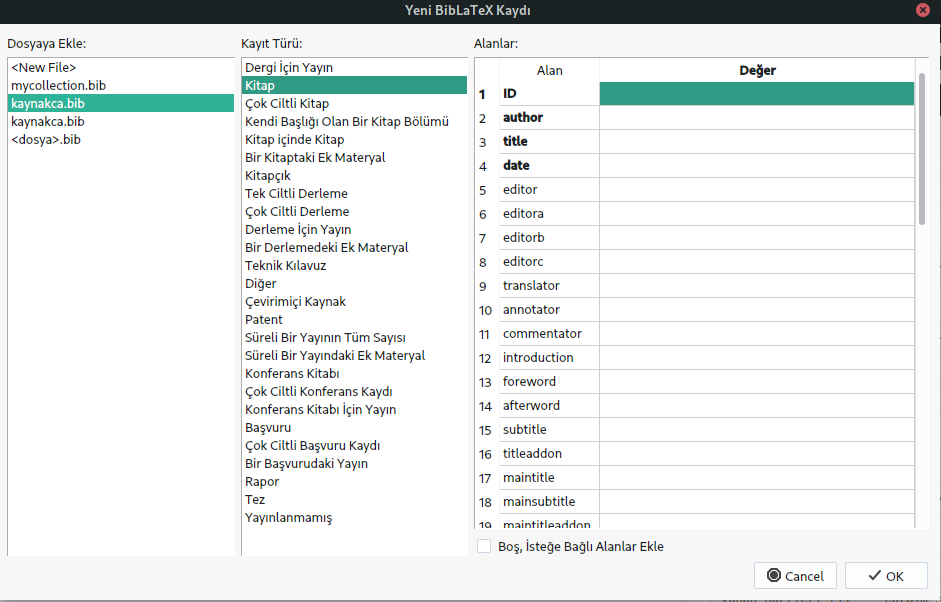

3.1 Kaynakça
3.1.1 Bütünleşik Kaynakça
LaTeX’de kaynakça oluşturmanın bir yolu, kaynakçayı kaynak dosyanızın
(.tex uzantılı ana dosyanız) içindeki bir ortamda hazırlamaktır.
Kullanacağınız ortam thebibliography ortamıdır.
\begin{thebibliography}{<sayı>}
\end{thebibliography}Ortam komutundaki <sayı> değişkeni, kaynağın etiketi veya etiket
girilmediği takdirde verilen sıra numarasının kaç karakter uzunluğunda
olacağını belirtir. Örneğin ortam
\begin{thebibliography}{9}
\end{thebibliography}şeklinde oluşturulursa etiket veya etiket girilmediği takdirde verilen sıra numarası için bir karakter uzunluğunda yer ayrılması gerektiği ve toplamda bu ortama en fazla dokuz adet kaynak girileceği belirtilmiş olur. Eğer dokuzdan fazla kaynak girilecekse, 99 kaynağa kadar izin veren “45” gibi iki basamaklı bir sayı girilebilir.
Ortama her kaynak \bibitem komutuyla eklenir ve komuttan sonra kaynağı
tanımlayıcı bilgiler girilir. Bu bilgiler girilirken biçim elle
oluşturulur.
\bibitem[<etiket>]{<anahtar>}Komutun zorunlu değişkeni olan <anahtar>, ileride kaynağa atıf yapmak
için kullanacağınız bir tanımlayıcıdır ve her kaynak için benzersiz
olmalıdır. Genelde akılda kolay kalması için yazarın soyadı ve yayın
yılı olacak şekilde düzenlenir.
Zorunlu olmayan <etiket> değişkeni girilmediği takdirde kaynağın önüne
köşeli parantezler içinde kaynağın sıra numarası yazdırılır.
Kaynağın sıra numarasının köşeli parantezler içinde yazılması istenmezse aşağıdaki komutlarla değişiklik yapılabilir.
\makeatletter
\renewcommand{\@biblabel}[1]{\textbf{#1.}}
\makeatotherBu komut verilirse sıra numaraları parantezsiz, kalın ve ardında nokta olacak şekilde yazılır.
Ortam genelde \end{document} komutundan hemen önce oluşturulur ve
ortamın oluşturulduğu yerde LaTeX, book ve report sınıflarında eğer
Türkçe dil paketi eklenmişse “Kaynakça”, article sınıfında ise
“Kaynaklar” ismini ve ardından kaynakları yazdırır.
Kaynaklardan herhangi birine atıf \cite komutuyla yapılır.
\cite[<seçenekler>]{<anahtar>}Komutun zorunlu değişkeni olan <anahtar>, atıf yapılmak istenen
kaynağın \bibitem komutundaki zorunlu değişkenidir. İsteğe bağlı
<seçenekler> değişkeninde ise sayfa numarası, bölüm numarası gibi
fazladan vurgulanmak istenen bilgiler girilebilir.
Atıf yapılan yerde kaynağın etiketi ya da etiket girilmediği takdirde sıra numarası köşeli parantez içinde yazdırılır. Eğer fazladan yapılan vurgu varsa, bu, etiket ya da sıra numarasının devamında virgülden sonra yazdırılır.
Aynı yerde birden fazla kaynağa atıf yapılacaksa atıf yapılacak kaynakların anahtarları aralarına virgül koyularak yazılır:
\cite{<anahtar1>,<anahtar2>,<anahtar3>}Aşağıda kaynak dosya örneği verilmiştir.
\documentclass{article}
\usepackage[T1]{fontenc}
\usepackage[turkish]{babel}
\usepackage{url}
\title{\LaTeX'de Kaynakça Yönetimi 1: Bütünleşik Kaynakça}
\author{Zafer Acar}
\begin{document}
\maketitle
WYSIWYG editörleri yerine, \TeX/\LaTeX{} \cite{lamport94}
dizgi sistemini kullanmaya başlayın. Görüldüğü gibi kaynakça oluşturmak
ve atıf yapmak oldukça kolaydır.
Ali Nesin, \cite[s.~47]{nesin07}'de pokerin matematiğini anlatıyor.
İki kaynağa birden atıf \cite{lamport94,nesin07} şeklinde yapılır.
\begin{thebibliography}{9}
\bibitem{lamport94}
Leslie Lamport,
\textit{\LaTeX: a document preparation system}, Addison Wesley,
Massachusetts, 2nd edition, 1994.
\bibitem[N]{nesin07} Ali Nesin, \textit{Matematik ve Oyun},
Nesin Yayıncılık, 2007.
\end{thebibliography}
\end{document}3.1.2 Kaynakçanın ayrı dosyada hazırlanması
Kaynakçayı ayrı bir dosyada hazırlayıp TeX dağıtımlarıyla hazır olarak gelen BiBTeX programıyla yazdırabiliriz.
Bu yöntemde kaynakça, uzantısı .bib olan ayrı bir dosyada hazırlanır.
Bu dosya basit bir metin dosyası olup, metin editörü ya da LaTeX editörü
kullanılarak oluşturulabilir, düzenlenebilir. Ayrıca
Mendeley ya da
Jabref gibi akademik referans düzenleme programlarından da
yararlanılabilir.
Bu yöntemin önemli avantajları vardır:
- Biçimlendirme otomatik yapılır. Eğer çalışmanızı yayımlayacak dergi ya da yayınevi kaynakçayı farklı bir formatta isterse her kaynağı tek tek elle biçimlendirmek zorunda kalmazsınız. Basit bir komut işinizi görür.
- Dosyayı bir kere oluşturur ve sonra başka çalışmalarda kullanabilirsiniz.
- Google Akademik, Google Kitaplar ve DergiPark gibi platformlardan kullandığınız kaynakların BiBTeX kodunu çekebilirsiniz (bkz. Şekil 3.1).
- Yukarıda da bahsettiğimiz gibi Mendeley ve Jabref gibi akademik atıf düzenleme programlarını kullanarak kaynakların BiBTeX kodunu oluşturabilir, düzenleyebilirsiniz.
Şekil 3.1: Google Akademikten alıntı yapma
3.1.2.1 Dosyanın hazırlanması
Aşağıda .bib uzantılı bir dosya örneği gösterilmiştir.
@book{lang13,
title={Algebraic number theory},
author={Lang, Serge},
volume={110},
year={2013},
publisher={Springer Science \& Business Media},
}
@article{lamport78,
title={Time, clocks, and the ordering of events in a
distributed system},
author={Lamport, Leslie},
journal={Communications of the ACM},
volume={21},
number={7},
pages={558--565},
year={1978},
publisher={ACM},
}
@manual{Oetiker06,
author = {Oetiker, Tobias and Partl, Hubert and Hyna, Irene
and Schlegl, Elisabeth},
title = {İnce bir {\LaTeXe} Elkitabı veya, 116 dakikada
{\LaTeXe}},
note = {Türkçesi: Bekir Karaoğlu},
url = {http://ftp.ntua.gr/mirror/ctan/info/lshort/turkish/
lshort-tr.pdf},
year = {2006},
}Bu dosyada Serge Lang’a ait bir kitap (@book), Leslie Lamport’a ait
bir makale (@article) ve LaTeX için bir teknik kılavuz (@manual)
vardır.
Her kaynağın ilk olarak @ işaretiyle türü belirtilir. Yukarıdakilere
ek olarak rapor için @report, tez için @thesis, çevrimiçi kaynaklar
için @online kullanılır. Bunların dışındaki birçok türe LaTeX
editörlerinin menü çubuğuklarında bulunan “Kaynakça (Bibliography)”
menüsünden ulaşılabilir.
İlk girdi (lang13, lamport78, Oetiker06) kaynağa atıf yapmak için kullanılan anahtardır. Sonrasında
gelenler de tahmin edilebileceği gibi başlık (title), yazar
(author), yayıncı (publisher), yıl (year), dergi (journal), cilt
(volume)… gibi kaynağı tanımlayan bilgilerdir. Bu tanımlamaların her
biri eşittir işaretinden sonra iki çengelli parantez arasında yapılır
(çift tırnak da kullanılabilir) ve her tanımlama (sonuncusu olsa dahi)
virgülle ayrılır.
Yazar adı ya
author={Adı Soyadı}ya da
author={Soyadı, Adı}şeklinde girilmelidir ve birden fazla yazar varsa yazarlar yukarıdaki
yazımdan dolayı virgülle değil and ile ayrılmalıdır. Yazarları ayırmak
için virgül kullanırsanız yüksek ihtimalle LaTeX, yazarların adları ve
soyadlarını karıştıracaktır.
Bir diğer önemli nokta özel kelimeleri yazmak için kullanılan komutları
ve aksanlı harfleri iki çengelli
parantez içinde yazmaktır. Örneğin “â” için {\^a} yazılmalıdır. Genel
olarak sorun yaşanan karakterleri iki çengelli parantez içine yazmak
gerekir.
Her tür için zorunlu olarak belirtilmesi gereken bilgiler ve isteğe
bağlı bilgiler vardır. Bunların ne olduklarını tahmin etmek zor
değildir. Bu konuda editörden de yararlanabilirsiniz. Örneğin, .bib
uzantılı dosyayı açıp editörde “Kaynakça \(\rightarrow\) Tez” yolunu
izlerseniz aşağıdaki listeyi yazdıracaktır.
@thesis{ID,
author = {author},
title = {title},
type = {type},
institution = {institution},
date = {date},
OPTsubtitle = {subtitle},
OPTtitleaddon = {titleaddon},
OPTlanguage = {language},
OPTnote = {note},
OPTlocation = {location},
OPTmonth = {month},
OPTisbn = {isbn},
OPTchapter = {chapter},
OPTpages = {pages},
OPTpagetotal = {pagetotal},
OPTaddendum = {addendum},
OPTpubstate = {pubstate},
OPTdoi = {doi},
OPTeprint = {eprint},
OPTeprintclass = {eprintclass},
OPTeprinttype = {eprinttype},
OPTurl = {url},
OPTurldate = {urldate},
}Görüldüğü gibi ilk altı satır zorunlu, OPT ile başlayanlar isteğe bağlıdır. İsteğe bağlı olanlardan belirtmek istediklerinizin başında bulunan OPT’yi silip tanımlamayı yapabilirsiniz.
Editörden yararlanmanın diğer bir yolu “Kaynakça \(\rightarrow\) Kaynakça Kaydı Ekle…” yolunu izlemektir. Bu yolu izlediğinizde aşağıdaki pencere açılır (örnek TeXstudio editörüne aittir).

Pencerenin solunda kaydı eklemek istediğiniz dosyayı ve ortada kayıt türünü belirtir, sağda da kaynağın bilgilerini girersiniz. Zorunlu bilgiler en üstte yer alan kalın yazılmış olanlardır.
3.1.2.2 Kaynakçanın yazdırılması
Kaynakçayı yazdırmak için BiBTeX’i kullanacağız. BiBTeX’in LaTeX’le standart olarak geldiğini ifade etmiştik. Dolayısıyla bu programı kullanmak için ek bir şey yapmanız gerekmez.
Oluşturulan .bib uzantılı dosya \bibliography komutuyla içeri
aktarılır, \bibliographystyle komutuyla da kullanılacak biçim
belirtilir.
\bibliographystyle{<biçim>}
\bibliography{<dosya>}Burada yer alan <dosya> uzantısının belirtilmesine gerek yoktur.
Dosyanın kaynakca.bib olduğunu varsayarak, komut
\bibliography{kaynakca} şeklinde verilir. Kullanılabilecek biçimler
abbrv, acm, alpha, apalike, ieeetr, plain, siam ve
unsrt’dir. Biçimlerin nasıl çıktı verdiklerini görmek için şuraya
bakabilirsiniz.
Atıf, bütünleşik kaynakçada olduğu gibi \cite komutuyla yapılır fakat
bütünleşik kaynakçadan farklı olarak atıf yapılmayan kaynaklar
yazdırılmaz. Bazı kaynakların bu kuraldan ayrı tutulması istenirse
\nocite komutu, değişkenine kaynağın anahtarı yazılarak
\bibliography komutundan önce verilmelidir.
\nocite{<anahtar>}Eğer tüm kaynakların bu kuraldan ayrı tutulması isteniyorsa komut
\nocite{*} şeklinde verilmelidir.
Kaynakçanın belgeye yazılması için kaynak dosyanın derlenip, BiBTeX programının çalıştırılması ve ardından dosyanın en az iki kere daha derlenmesi gerekir. BiBTeX programı, editörde “Araçlar \(\rightarrow\) Kaynakça” yoluyla çalıştırılır (klavye kısa yolu F8). Aynı şey, uçbirimde sırasıyla
pdflatex kaynakdosya
bibtex kaynakdosya
pdflatex kaynakdosya
pdflatex kaynakdosyakomutları çalıştırılarak yapılabilir.
Aşağıda kaynak dosya örneği verilmiştir. Bu dosyayı derleyebilmeniz için içeriği yukarıda verilen kaynakca.bib dosyasının bu dosyayla aynı dizinde olması gerektiğini unutmayınız.
\documentclass[10pt,a4paper]{article}
\usepackage[T1]{fontenc}
\usepackage[turkish]{babel}
\usepackage{dtk-logos} % \BibTeX komutu için...
\title{Kaynakça Yönetimi 2: \BibTeX}
\author{Zafer Acar}
\begin{document}
\maketitle
Lang'ın kitabı \cite{lang13}, Lamport'un makalesi \cite{lamport78}
ve \LaTeX{} için Türkçe kaynak \cite{Oetiker06} \dots
\bibliographystyle{siam}
\bibliography{kaynakca}
\end{document}